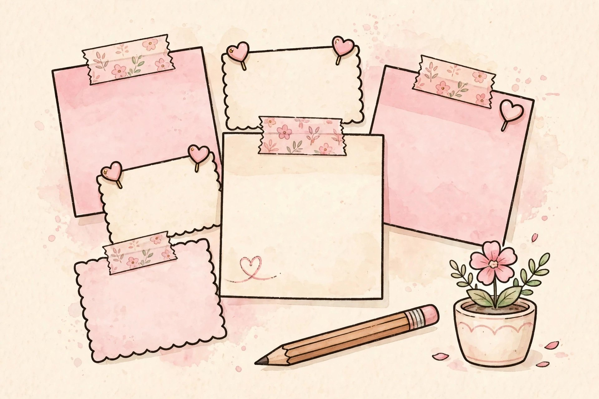
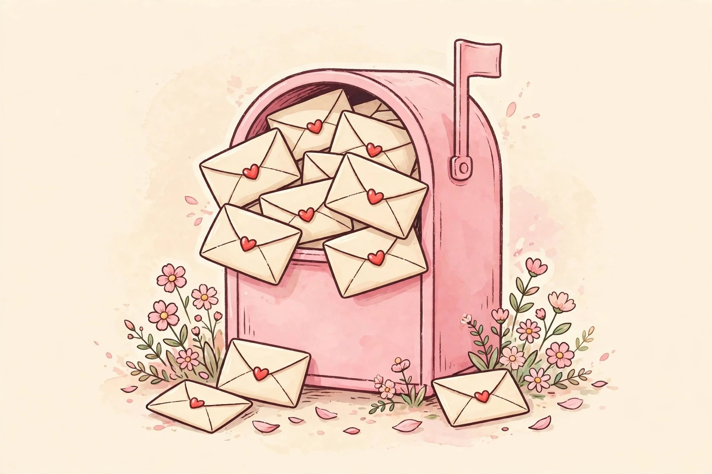
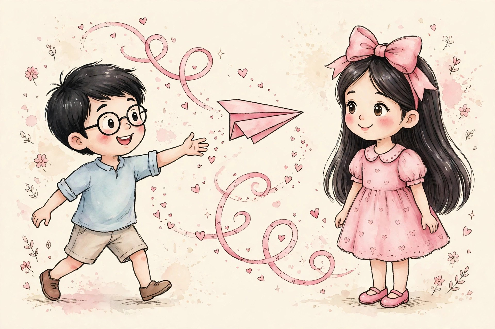
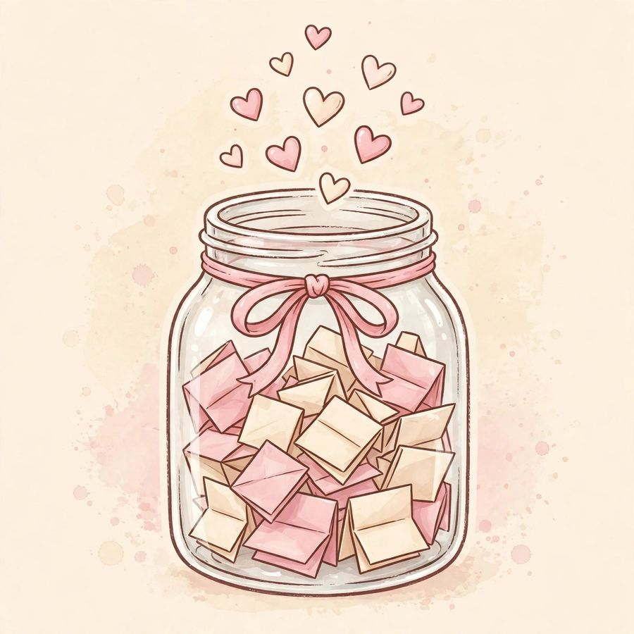
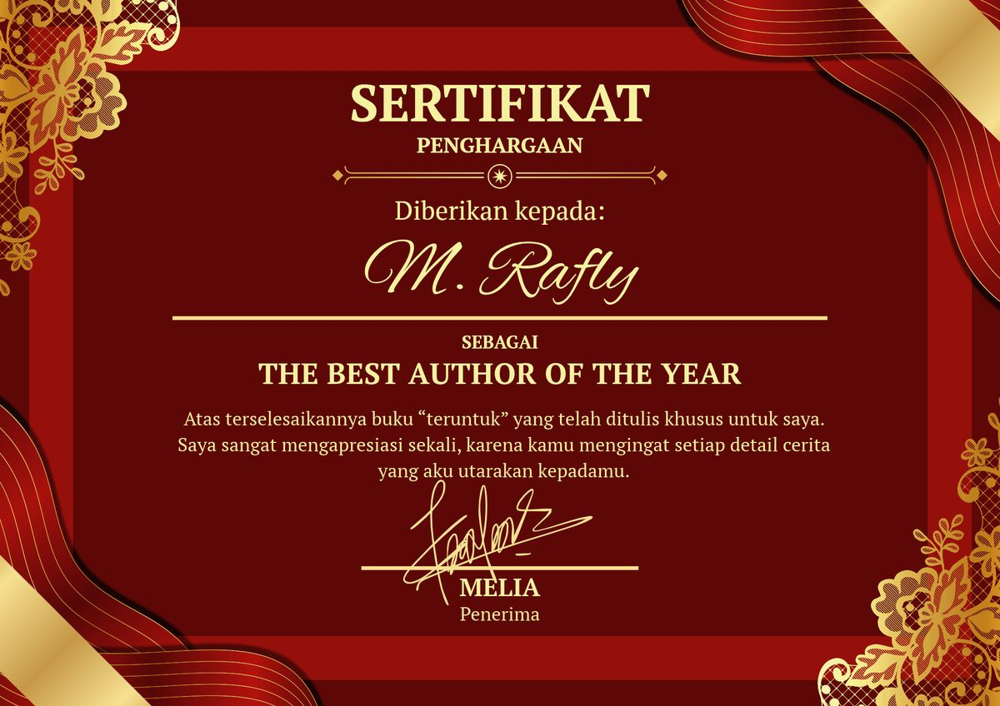
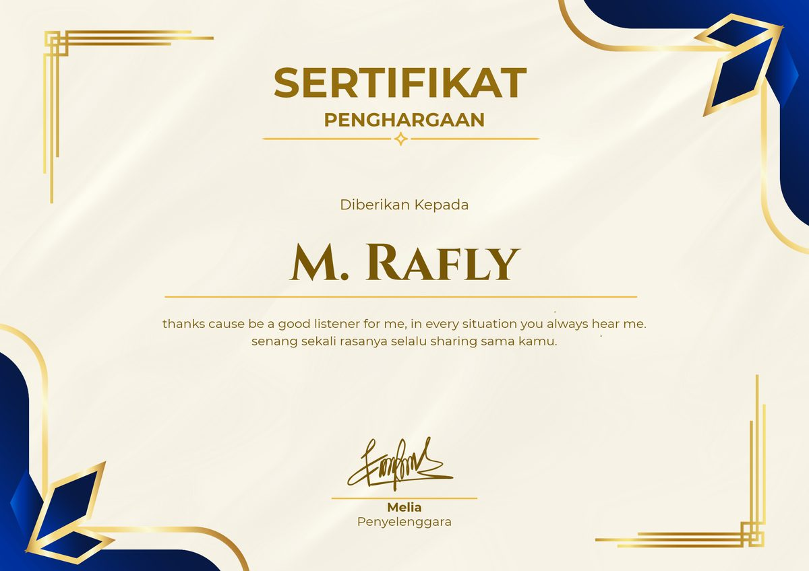
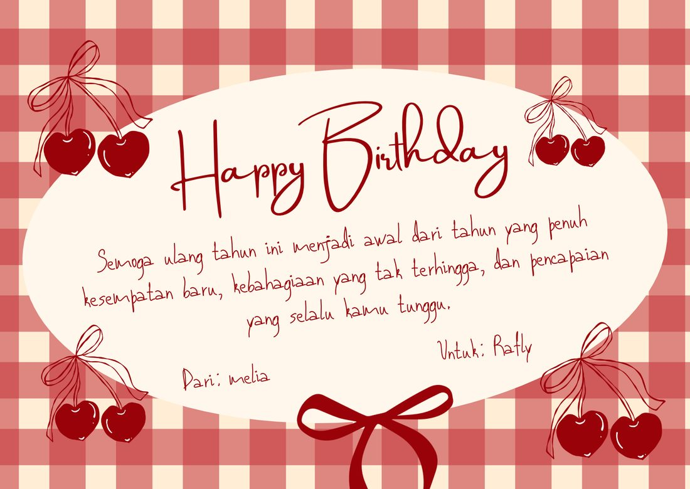

Pesan-Pesan Kecil Untukmu
Album darimu isinya enam lagu, jadi balasanku tidak cukup cuma satu surat. Kutambah satu toples penuh pesan kecil. Ambil satu-satu, bacanya pelan-pelan saja, tidak usah dihabiskan hari ini.




Yang Kamu Berikan, Kusimpan Semua
Dua sertifikat dan satu kartu. Bagimu mungkin ini hal kecil. Bagiku, ini bukti bahwa ada orang yang benar-benar mendengarkan.




Dan Sekarang, Sertifikat Untukmu
Kamu memberiku dua, kubalas seratus. Semuanya atas namamu yang sebenarnya, Melia D. Pasha, dan semuanya berstempel resmi dariku.
Untuk Melia, yang Selalu Duluan
Melia,
Aku sadar akhir-akhir ini aku lebih sering menerima daripada memberi. Album itu masih kuputar sampai sekarang, dan tiap kali selesai aku merasa belum bilang apa-apa yang pantas. Jadi malam ini aku nulis ini pelan-pelan, tanpa mau terdengar pintar. Kamu yang anak sastra pasti tahu kalau ada yang dibuat-buat, jadi aku pilih apa adanya saja.
Yang pertama kusyukuri adalah suaramu. Selama ini kamu yang membacakan puisi, dan aku cuma duduk mendengarkan. Aku baru sadar itu bukan hal kecil. Orang yang mau membacakan sesuatu untukmu berarti mau meminjamkan napasnya. Sekarang aku coba menulis untukmu, dan ternyata susah sekali. Tanganku kaku, kalimatku tidak sefasih lidahmu. Tapi justru dari situ aku mengerti seberapa sabar kamu selama ini.
Kamu pernah bilang aku seperti perpustakaan yang menjelma manusia. Aku simpan kalimat itu lama. Padahal yang sering membuka pintu dan menyalakan lampu di dalamku itu kamu. Aku cuma tahu cara menyimpan, kamu tahu cara membuat apa yang kusimpan jadi berguna.
Aku juga ingat pagi-pagi kita di telepon. Suaramu, lalu ayam di dekat kosmu yang berkokok tanpa tahu waktu, dan kita malah tertawa. Kita main catur dan Uno sambil bicara tanpa arah, sampai kopi dingin dan lupa sudah berapa jam. Aku tidak pernah bilang, tapi itu salah satu bagian hariku yang paling kutunggu. [tambahkan satu momen telepon yang paling kamu ingat]
Lalu proposal pertemanan dan sertifikat persahabatan itu. Kamu mungkin mengira itu lelucon, dan memang lucu. Tapi aku membacanya dengan serius. Tidak banyak orang yang repot membuat sesuatu yang resmi hanya untuk bilang “aku mau jadi temanmu”. Aku masih menyimpannya. [ganti kalau ada detail lain yang lebih tepat]
Ada juga yang mau kuakui. Selama ini aku sering jadi pendengar yang baik tapi pencerita yang pelit. Kamu memberi banyak, aku membalas sedikit-sedikit. Aku tahu itu timpang, dan aku tidak mau bersembunyi di balik “aku memang begini”. [isi satu hal jujur yang memang kamu rasakan]
Sama-Sama Satu-Satunya
Aku baru sadar sesuatu waktu menulis ini, Melia: kita berdua sama-sama anak tunggal. Aku tahu itu dari dulu, tentu saja, tapi baru malam ini aku benar-benar memikirkannya, sambil merokok di teras dan menatap kopi yang sudah dingin. Dua orang yang sama-sama tumbuh tanpa saudara, sama-sama terbiasa mengurus isi kepala sendiri, lalu entah bagaimana bertemu dan saling mengisi tempat yang tidak pernah kami sadari kosong. Mungkin itu sebabnya aku merasa begitu dirayakan olehmu. Kamu tahu persis bagaimana rasanya jadi satu-satunya, jadi kamu tahu betapa berartinya kalau ada orang yang datang membawa sesuatu hanya untukmu.
Albummu itu, aku masih belum selesai memikirkannya. Aku mendengarkannya sendirian dan setelah selesai aku duduk lama dengan dada yang penuh, tidak bisa membalas apa-apa. Seumur hidup aku terbiasa merayakan diriku sendiri dalam diam, atau tidak merayakannya sama sekali, dan tiba-tiba ada kamu yang repot memikirkan lagu dan puisi yang cocok untukku. Aku tidak punya kakak yang bisa memberiku kejutan, tidak punya adik yang bisa membuatkan kartu. Yang ada cuma kamu, orang di luar rumahku, yang memilih melakukannya tanpa ada kewajiban apa pun. Aku bersyukur jadi anak tunggal justru karena malam itu, karena rasanya begitu utuh dan tidak terduga.
Dan aku mengagumi rumahmu, Mel. Maksudku bukan bangunannya, tapi cara orang-orang di dalamnya hidup. Aku suka sekali ayahmu. Beliau orang yang paling santai yang pernah kuceritakan ke orang lain. Dia main voli sampai lupa waktu, pulang dengan wajah puas, lalu dimarahi mamamu, dan dari ceritamu aku tahu beliau menerimanya sambil tertawa, seolah dimarahi itu bagian dari permainan juga. Aku membayangkan rumah yang seperti itu: ada yang tidak mau terlalu serius pada hidup, ada yang cerewet karena sayang, dan di tengahnya ada kamu, anak satu-satunya, yang tumbuh dengan dua suara itu. Mungkin dari situ kamu belajar cara tertawa di tengah baris puisi yang kamu bacakan, dan cara marah kecil pada ayam di belakang kosmu tanpa pernah benar-benar marah.
Aku tidak sesantai ayahmu. Aku orang yang menimbang kata terlalu lama, yang kalau mau bilang sesuatu harus merokok dulu tiga batang. Tapi aku belajar dari ceritamu bahwa santai itu bukan berarti tidak peduli. Itu cara orang bertahan dengan baik, dan cara menjaga orang lain tetap merasa aman di depanmu. Kamu punya itu juga, aku merasakannya di telepon yang tidak pernah terburu-buru, di caramu mendengarkan tanpa membuatku merasa harus tampil. Aku kira itu warisan dari rumahmu, dan aku diam-diam berterima kasih pada ayahmu dan mamamu karena sudah membuatmu jadi orang yang begini.
Kamu dulu yang membacakan puisi, aku yang mendengarkan. Sekarang aku yang menulis, tanganku gemetar, kalimatku tidak serapi punyamu. Tapi aku ingin kamu tahu apa yang kupikirkan tentangmu setiap kali kita selesai bicara: bahwa aku beruntung sekali pernah bertemu dengan seseorang yang sama-sama sendirian di dunianya, tapi memilih membuka pintu duluan. Aku merasa dirayakan, Melia. Dan kalau suatu hari kamu merasa dunia ini terlalu sepi untuk anak satu-satunya, ingat bahwa ada satu orang lagi yang sama-sama tahu rasanya, yang akan datang menelepon, dengar semua ceritamu sampai habis, dan mungkin ikut tertawa waktu ayahmu dimarahi lagi karena voli.
Terima kasih untuk semuanya. Aku belum tahu cara membalas sebesar itu, tapi aku di sini, dan aku tidak ke mana-mana.
Aku tidak punya kata yang cukup besar untuk ini, jadi aku janji hal yang bisa kutepati saja. Kalau kamu bercerita, aku dengarkan sampai habis, tidak menyela dan tidak buru-buru. Kalau kamu lelah, aku temani, tidak perlu menjelaskan apa-apa. Kalau suatu hari giliranmu yang kehabisan suara, aku yang akan membacakan sesuatu, walau pasti masih kalah bagus dari caramu.
Dan kalau suatu hari kita sibuk dengan hidup masing-masing, ada beberapa doa yang selalu kutitipkan untukmu.
Semoga setiap puisi yang kamu bacakan sampai ke telinga yang benar-benar mendengar, bukan yang cuma menunggu giliran bicara. Semoga kamu tidak pernah lagi jadi orang yang paling banyak memberi di antara orang-orang yang kamu sayang. Semoga hal-hal baik yang kamu buat dengan tanganmu sendiri, seperti lagu, tulisan, dan kejutan kecil yang kamu rancang diam-diam, selalu dibalas dengan perhatian yang sama besarnya.
Semoga pagi-pagimu selalu punya suara yang bikin kamu tersenyum, entah itu ayam yang berkokok kurang ajar atau seseorang di ujung telepon yang tidak buru-buru menutup. Semoga ada selalu orang yang mau kalah main catur dan Uno denganmu tanpa pura-pura, dan yang tertawa paling keras waktu kamu menang. Semoga kamu tidak pernah kehabisan teman yang menganggap hal-hal lucu kecilmu sebagai hal yang resmi dan penting.
Semoga semesta pelan-pelan saja memperlakukanmu. Semoga kepalamu yang penuh kata-kata itu selalu punya ruang untuk istirahat, dan semoga kamu tidak pernah merasa harus kuat sendirian. Semoga ke mana pun kamu melangkah, kamu menemukan tempat yang membuatmu bisa jadi dirimu seutuhnya, dengan semua tawa kerasmu, kebiasaan anehmu, dan hatimu yang selalu duluan memberi.
Dan kalau dunia terasa terlalu bising, ingat bahwa pernah ada seseorang yang diam-diam belajar menulis hanya supaya bisa membalas suaramu.
Terima kasih sudah jadi orang yang selalu datang duluan, Melia. Aku lihat semuanya, dan tidak ada satu pun yang kuanggap biasa.